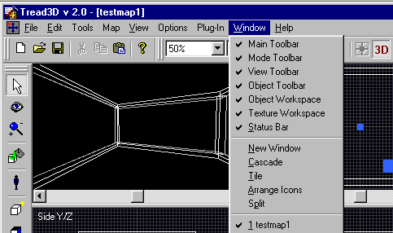
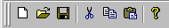
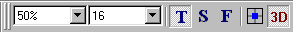
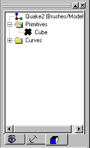
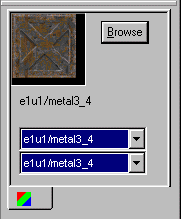

|
|
|---|
Window Menu

Main Toolbar This toggles the main tool bar on and off.
Mode Toolbar This toggles the mode tool bar on and off.

View Toolbar This toggles the view tool bar on and off.
Object Toolbar This toggles the object tool bar on and off.

Object Workspace This toggles the main object workspace on and off.
Texture Workspace This toggles the texture workspace on and off.
Status Bar This toggles the status bar on and off.
New Window This will open a second window in the editor workspace with only the new one being observable.
Cascade This will open a second window in the editor workspace with both being observable
Tile This will resize the editor workspace to allow minimizing and maximizing the window.
Arrange Icons This allows you to arrange the toolbars within the main map editor window.
Split This allows the active cell/element to be resized horizontally.
l This block lists all opened maps.